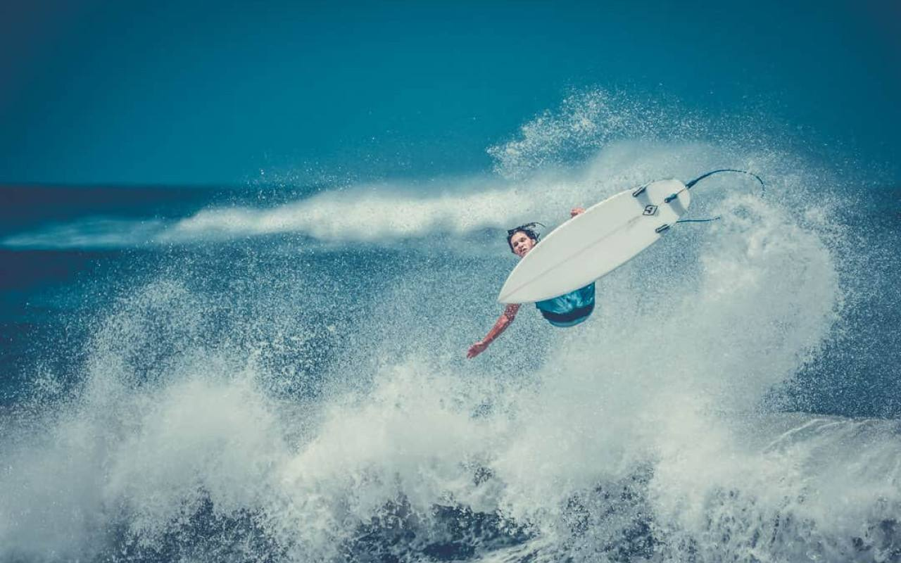
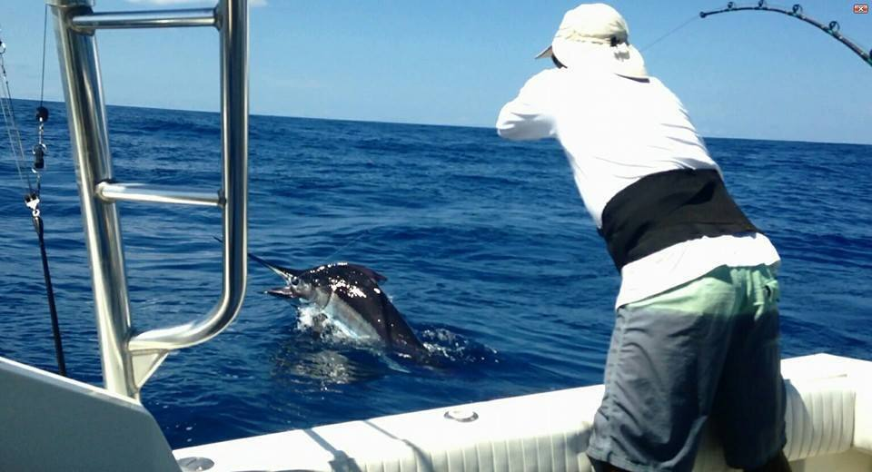

Tamarindo, Costa Rica, has become a global hotspot for surfers, and 2024 promises even more action on the waves. Here’s a deeper look at the best spots:
This beach remains the go-to spot for beginners. The consistent waves, gentle breaks, and access to numerous surf schools make it perfect for first-timers or those looking to sharpen their skills. The southern part of Playa Tamarindo is known for smaller, rolling waves, ideal for learning or practicing. As you move northward, the waves become a little more challenging, giving intermediate surfers a good run.
The town of Tamarindo is bustling with surf culture, offering a vibrant mix of surf shops, instructors, and community events. If you're staying in the area, booking a surf lesson is easy, and rental shops offer everything from boards to wetsuits. Plus, the atmosphere in the town makes it easy to meet fellow surfers and plan sessions with others.
Located just across the estuary from Playa Tamarindo, Playa Grande is a great option for intermediate surfers looking for a bit more of a challenge. Known for its fast, hollow waves, Playa Grande offers an adrenaline-packed experience without the heavy crowds often found in other surfing hubs. The best times to hit this spot are during the mid-to-high tide, and early morning sessions are ideal for avoiding the wind.
This beach is part of the Las Baulas National Marine Park, so it’s not only a great surf spot but also a pristine, natural area where you might catch a glimpse of nesting leatherback turtles in season. The waves here are known to be a bit stronger and better for shortboarders who want to carve and perform maneuvers.
Playa Langosta offers a more secluded surfing experience compared to the busier Playa Tamarindo. Known for its rocky reef breaks, this beach is a favorite for advanced surfers who want to tackle steeper, faster waves. The conditions here are not ideal for beginners, but for seasoned surfers, Playa Langosta is a challenge worth taking on. The break can hold larger swells, and low tide tends to be the best time to surf, with waves that are clean and powerful.
The surrounding area of Playa Langosta is quieter and more residential, offering a peaceful atmosphere after a day on the waves. Although not as bustling as Tamarindo, it’s perfect for surfers seeking a serene, less crowded experience with strong, rewarding waves.
If you're looking to venture a bit further, about a 20-minute drive from Tamarindo will bring you to Avellanas Beach. Known as “Little Hawaii” due to its large swells, Avellanas is ideal for intermediate and advanced surfers. The waves can get big, especially during high tide, making it a thrilling spot for those looking for a more powerful break. However, beginners can still enjoy the beach during smaller swells or with a longboard. The beach’s relaxed atmosphere, combined with its fantastic surf, makes it a hidden gem worth the visit.
Best time to surf: While you can find surfable waves year-round in Tamarindo, the rainy season (May to November) brings the biggest swells, ideal for advanced surfers. The dry season (December to April) offers smaller waves, making it great for beginners.
Surf schools & lessons: Tamarindo is home to a variety of excellent surf schools, with instructors that cater to all skill levels. Whether you're booking a lesson or renting gear, you’ll find plenty of options in town.
After-surf spots: Once you’ve had your fill of waves, Tamarindo offers a host of spots to relax. Whether it's a beachfront café or a local bar with live music, the post-surf scene in Tamarindo is lively and welcoming.
This article covers a wide range of surf spots, from beginner beaches to advanced reef breaks, making Tamarindo a versatile surfing destination for all types of surfers in 2024. Whether you’re a first-time surfer or looking to conquer more challenging waves, Tamarindo has something for everyone.
Next up: Explore the Go Fish Costa Rica Fleet: 2023 Fishing Charters · All posts

Seventeen boats, two bases, one honest recommendation.